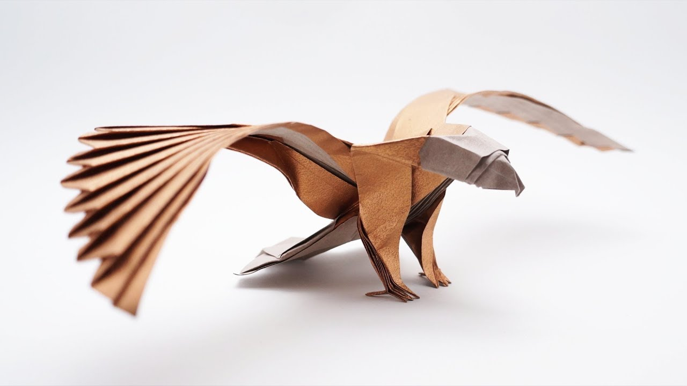
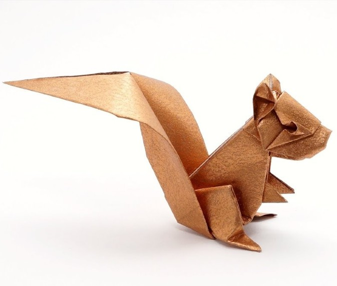
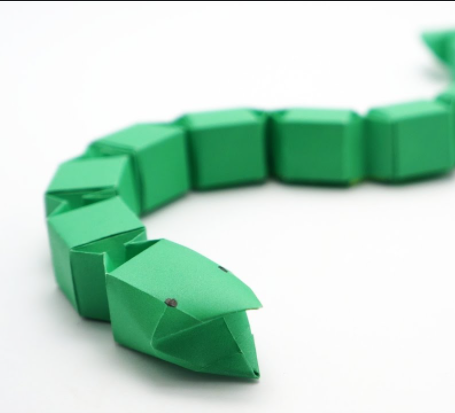
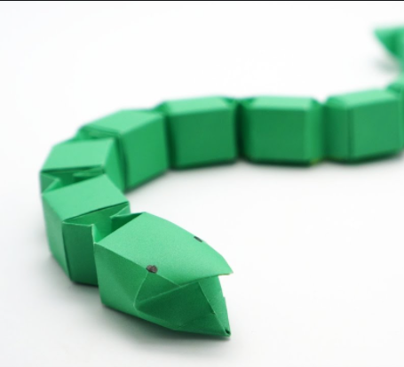

Origami Eagle
Origami Squirrel
 

More Origami
Origami Chicken
Origami Snake
Origami is the art of folding paper. It's name derives from the Japanese words ori ("folding") and kami ("paper").
Traditional origami consists of folding a single sheet of square paper (often with a colored side) into a sculpture
without cutting, gluing, taping, or even marking it. Like Japanese woodblock prints—an art form that also saw popularity
during this time—origami works often featured flowers, birds, and other nature-based motifs. These subjects are also
prevalent in contemporary origami, which remains true to the traditional Japanese practice in all ways but one: originally,
the practice allowed artists to strategically cut the sheets of paper. Today, however, true origami is sculpted entirely through folds
—an attribute the Japanese adopted from Europe.